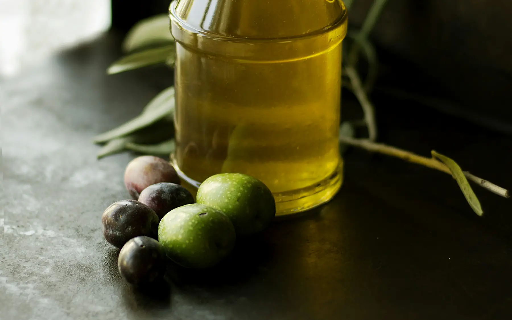

Akdeniz tipi beslenme: tabağınızı nasıl kurarsınız?The Mediterranean diet: how to build your plate
Akdeniz tipi beslenme bir diyet listesinden çok bir sofra düzeni. İyi haber şu: Türk mutfağı bu modele zaten çok yakın.The Mediterranean diet is less a diet sheet and more a way of setting the table. The good news: Turkish cooking is already very close to it.

Temel ilkeler
- Her öğünde sebze, günde 2–3 porsiyon meyve
- Ana yağ kaynağı olarak sızma zeytinyağı
- Haftada en az 3 kez baklagil (mercimek, nohut, fasulye)
- Tam tahıllar: bulgur, yulaf, tam buğday ekmeği
- Haftada en az 2 kez balık
- Günde bir avuç çiğ kuruyemiş
- Ölçülü miktarda yoğurt ve peynir
- Kırmızı et ayda birkaç kez, işlenmiş et (sucuk, salam) nadiren
- Tatlılar özel günlerde
Kanıtlar ne gösteriyor?
İspanya’da 7.000’den fazla katılımcıyla yürütülen PREDIMED çalışmasında, sızma zeytinyağı veya kuruyemişle desteklenen Akdeniz tipi beslenme, az yağlı diyet önerilen gruba kıyasla kalp krizi, inme ve kardiyovasküler ölümden oluşan birleşik riskte yaklaşık %30 azalmayla ilişkilendirildi. Gözlemsel çalışmalar da bu modelin tip 2 diyabet ve bazı kronik hastalık risklerindeki azalmayla ilişkili olduğunu gösteriyor.
Not
Akdeniz tipi beslenme bir kilo verme diyeti olarak tasarlanmadı. Kilo hedefiniz varsa porsiyonlar, özellikle yağ ve kuruyemiş miktarı yine önemli.
Tabağınızı kurmak
Öğle ve akşam yemeklerinde şu oranı hedefleyin:
- Yarısı: sebze (zeytinyağlı, salata, fırın sebze)
- Dörtte biri: protein (balık, tavuk, yumurta, baklagil)
- Dörtte biri: tam tahıl veya patates
- Yanında: yoğurt veya cacık, 1 tatlı kaşığı zeytinyağı
Türk mutfağından örnekler
| Öğün | Akdeniz tipine uygun seçim |
|---|---|
| Kahvaltı | Haşlanmış yumurta, beyaz peynir, domates, salatalık, zeytin, tam buğday ekmeği |
| Öğle | Zeytinyağlı taze fasulye, bulgur pilavı, cacık |
| Akşam | Izgara levrek, roka salatası, fırın patates |
| Ara öğün | Taze meyve ve bir avuç ceviz |
| Mevsiminde | Hamsi, istavrit, sardalya; enginar, bakla, semizotu |
Zeytinyağıyla pişirmek güvenli mi?
Evet. Sızma zeytinyağı ev tipi pişirme sıcaklıklarında oldukça dayanıklıdır. Yine de kızartma yerine haşlama, fırın, buğulama ve kısık ateşte pişirme yöntemlerini tercih etmek hem enerjiyi hem de yüksek ısıda oluşan istenmeyen bileşikleri azaltır.
Dikkat edilecek noktalar
- Zeytinyağı sağlıklı ama enerji yoğun: 1 yemek kaşığı yaklaşık 120 kcal.
- Hamur işleri ve beyaz ekmek bu modelin parçası değil.
- Tuzu azaltmak için limon, sumak, nane, kekik ve pul biberden yararlanın.
- Turşu ve salamura zeytinde tuz yüksek; tansiyonunuz varsa ölçülü tüketin.
The core principles
- Vegetables at every meal and 2–3 portions of fruit a day
- Extra-virgin olive oil as the main fat
- Legumes (lentils, chickpeas, beans) at least 3 times a week
- Wholegrains: bulgur, oats, wholewheat bread
- Fish at least twice a week
- A handful of raw nuts a day
- Yogurt and cheese in moderation
- Red meat a few times a month, processed meat (sucuk, salami) rarely
- Sweets for special occasions
What does the evidence show?
In the PREDIMED trial in Spain, with more than 7,000 participants, a Mediterranean diet supplemented with extra-virgin olive oil or nuts was associated with about a 30% lower combined risk of heart attack, stroke and cardiovascular death compared with advice to follow a low-fat diet. Observational studies also link the pattern to lower risk of type 2 diabetes and several chronic diseases.
Note
The Mediterranean diet wasn’t designed as a weight-loss diet. If weight is your goal, portions still matter, particularly for oil and nuts.
Building your plate
Aim for this balance at lunch and dinner:
- Half: vegetables (olive-oil dishes, salad, roasted vegetables)
- A quarter: protein (fish, chicken, eggs, legumes)
- A quarter: wholegrains or potatoes
- On the side: yogurt or cacık, 1 teaspoon of olive oil
Examples from Turkish cooking
| Meal | Mediterranean-style choice |
|---|---|
| Breakfast | Boiled egg, white cheese, tomato, cucumber, olives, wholewheat bread |
| Lunch | Green beans in olive oil, bulgur pilaf, cacık |
| Dinner | Grilled sea bass, rocket salad, roasted potatoes |
| Snack | Fresh fruit and a handful of walnuts |
| In season | Anchovies, horse mackerel, sardines; artichokes, broad beans, purslane |
Is it safe to cook with olive oil?
Yes. Extra-virgin olive oil is quite stable at home-cooking temperatures. Still, choosing boiling, baking, steaming or gentle cooking over deep-frying lowers both the calories and the unwanted compounds that form at high heat.
Things to watch
- Olive oil is healthy but energy-dense: 1 tablespoon is about 120 kcal.
- Pastries and white bread aren’t part of this pattern.
- Use lemon, sumac, mint, thyme and chilli flakes to cut down on salt.
- Pickles and brined olives are high in salt; go easy if you have high blood pressure.
Kaynaklar
- Estruch R, et al. Primary prevention of cardiovascular disease with a Mediterranean diet supplemented with extra-virgin olive oil or nuts. N Engl J Med. 2018;378:e34.
- Dinu M, et al. Mediterranean diet and multiple health outcomes: an umbrella review of meta-analyses of observational studies and randomised trials. Eur J Clin Nutr. 2018;72:30–43.
- T.C. Sağlık Bakanlığı. Türkiye Beslenme Rehberi (TÜBER). Ankara; 2022.